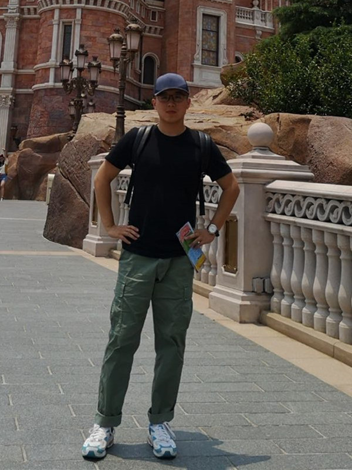

Welcome to Xiren Zhou's Homepage
Xiren Zhou (周熙人)
|
 |
School of Computer Science and Technology
University of Science and Technology of China (USTC)
Email: zhou0612@ustc.edu.cn
|
Personal Information
Xiren Zhou received the B.Sc. degree from Shandong University, Jinan, China, in 2014, and the Ph.D. degree in computer science from the University of Science and Technology of China, Hefei, China, in 2019. From 2019 to 2021, he worked in iFLYTEK Co., Ltd. as a core technology researcher and assistant to the president. He is currently an associate researcher with the School of Computer Science and Technology, USTC. His research interests include machine learning, remote sensing and medical data analyzing, and multi-sensor data processing.
Selected Paper:
- Chuyang Wei, Xiren Zhou*, ShikangLiu, Huanhuan Chen*. "Enhanced Anomaly Detection in GPR Data by Combining Spatial and Dynamic Information". IEEE Transactions on Geoscience and Remote Sensing (TGRS), 2024.
- Xiren Zhou, Shikang Liu, Ao Chen, Huanhuan Chen. "Learning in CubeRes Model Space for Anomaly Detection in 3D GPR Data". The 33rd International Joint Conference on Artificial Intelligence (IJCAI-24).
- Liangwei Chen, Xiren Zhou*, Qiang Tu, Huanhuan Chen*. "Enhancing Speech and Music Discrimination Through the Integration of Static and Dynamic Features". Interspeech-2024.
- Jinpeng Du, Xiren Zhou*, Huanhuan Chen*. "Enhanced Change Detection in Unregistered Images With CNNs and Attention GANs". IEEE Geoscience and Remote Sensing Letters (GRSL), 2024.
- Ao Chen, Xiren Zhou*, Yizhan Fan, Huanhuan Chen*. "Underground Diagnosis Based on GPR and Learning in the Model Space". IEEE Transactions on Pattern Analysis and Machine Intelligence (TPAMI), 2023.
- Xiren Zhou, Shikang Liu, Ao Chen, Qiuju Chen, Fang Xiong, Yumin Wang, Huanhuan Chen. "Underground Anomaly Detection in GPR Data by Learning in the C3 Model Space". IEEE Transactions on Geoscience and Remote Sensing (TGRS), 2023.
- Liangwei Chen, Xiren Zhou*, Huanhuan Chen*. "Audio Scanning Network: Bridging Time and Frequency Domains for Audio Classification". 38th AAAI Conference on Artificial Intelligence (AAAI-24), 2024
- Shikang Liu, Xiren Zhou*, Huanhuan Chen*. "From Data to D3 Model: Adaptive Subsurface Anomaly Detection in GPR Data". IEEE Transactions on Geoscience and Remote Sensing (TGRS), 2024.
- Xiren Zhou, Ao Chen, Muhammad Usman, Qiuju Chen, Fang Xiong, Jibing Wu, Huanhuan Chen. "Underground Pipeline Mapping from Multi-positional Data: Data Acquisition Platform and Pipeline Mapping Model". IEEE Transactions on Geoscience and Remote Sensing (TGRS), 2023.
- Xiangyu Wang, Lyuzhou Chen, Taiyu Ban, Derui Lyu, Yifeng Guan, Xingyu Wu, Xiren Zhou*, Huanhuan Chen*. "Accurate Label Refinement from Multi-Annotator of Remote Sensing Data". IEEE Transactions on Geoscience and Remote Sensing (TGRS), 2023.
- Xiren Zhou, Qiuju Chen, Bingbing Jiang, Huanhuan Chen. "An Underground Pipeline Mapping Method based on Fusion of Multi-Source Data". IEEE Transactions on Geoscience and Remote Sensing (TGRS), 60:1-12, 2022.
- Xiren Zhou, Shikang Liu, Ao Chen, Yizhan Fan, Huanhuan Chen. "Improving the Anomaly Detection in GPR Images by Fine-Tuning CNNs with Synthetic Data". arXiv:2210.11833, 2022.
- Xiren Zhou, Qiuju Chen , Shengfei Lyu, Huanhuan Chen. "Mapping the Buried Cable by Ground Penetrating Radar and Gaussian-Process Regression". IEEE Transactions on Geoscience and Remote Sensing(TGRS), 60:1-12, 2022.
- Xiren Zhou, Qiuju Chen, Shengfei Lyu, Huanhuan Chen, "Ellipse Inversion Model for Estimating the Orientation and Radius of Pipes from GPR Image". IEEE Journal of Selected Topics in Applied Earth Observations and Remote Sensing (JSTARS), 60:1-10, 2022.
- Jiamin Wu, Xiren Zhou, Qiuju Chen, "A Characteristic of Speaker's Audio in the Model Space Based on Adaptive Frequency Scaling", International Conference on Big Data and Information Analytics, 99-103, 2022.
- Buliao Huang, Yunhui Zhu, Muhammad Usman, Xiren Zhou*, Huanhuan Chen*. "Graph Neural Networks for Missing Value Classification in a Task-driven Metric Space". IEEE Transactions on Knowledge and Data Engineering(TKDE), 1-12, 2022.
- Bingbing Jiang, Xingyu Wu, Xiren Zhou Yi Liu, Anthony G Cohn, Weiguo Sheng, Huanhuan Chen. "Semi-Supervised Multiview Feature Selection With Adaptive Graph Learning", IEEE Transactions on Neural Networks and Learning Systems(TNNLS), 60:1-15, 2022.
- Buliao Huang, Yunhui Zhu, Xiren Zhou, Huanhuan Chen. "Conditional Inpainting Generative Flow". IEEE Symposium Series on Computational Intelligence, 1-7, 2022.
- Yunhui Zhu, Buliao Huang, Xiren Zhou, Huanhuan Chen. "Level-wise Dynamic Label Assignment for Oriented Object Detection". IEEE Symposium Series on Computational Intelligence, 1-8, 2022.
- Caijun Ren, Xiangyu Wang, Jian Gao, Xiren Zhou, Huanhuan Chen. "Unsupervised change detection in satellite images with generative adversarial network". IEEE Transactions on Geoscience and Remote Sensing(TGRS), 59(12):10047-10061,2020.
- Guiping Jiang, Xiren Zhou, Jinlong Li, Huanhuan Chen,"A cable-mapping algorithm based on ground-penetrating radar". IEEE Geoscience and Remote Sensing Letters(GRSL), 16(10): 1630-1634, 2019.
- Xiren Zhou, Huanhuan Chen, Tong Hao, "Efficient detection of buried plastic pipes by combining GPR and electric field methods", IEEE Transactions on Geoscience and Remote Sensing (TGRS), 57(6): 3967-3979, 2019.
- Xiren Zhou, Huanhuan Chen, Jinlong Li, "Probabilistic mixture model for mapping the underground pipes", ACM Transactions on Knowledge Discovery from Data (TKDD), 13(5): 1-26, 2019.
- Xiren Zhou, Huanhuan Chen, Tong Hao, "Mapping the buried pipelines from GPR and GPS data", International Conference on Software Engineering and Information Management, 199-203, 2019.
- Xiren Zhou, Huanhuan Chen, Jinlong Li, "An automatic GPR B-scan image interpreting model", IEEE Transactions on Geoscience and Remote Sensing(TGRS) 56(6):3398-3412, 2018.
Service:
- Publicity Chair of IEEE International Conference on Big Data and Information Analytics (BigDIA)
- Reviewer of IEEE Transactions on Neural Networks and Learning Systems (TNNLS)
- Reviewer of IEEE Transactions on Geoscience and Remote Sensing (TGRS)
- Reviewer of IEEE Transactions on Knowledge and Data Engineering (TKDE)
- Reviewer of IEEE Transactions on Industrial Informatics (TII)
- PC member of the AAAI Conference on Artificial Intelligence (AAAI)
Teaching:
- Graduate Course: Information and Signal Processing.
- Undergraduate Course: Database Systems and Applications